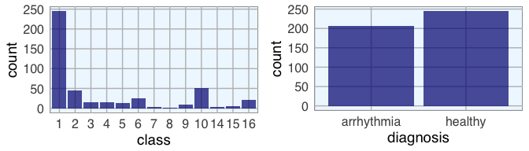
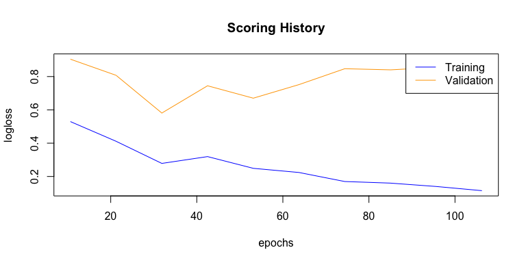
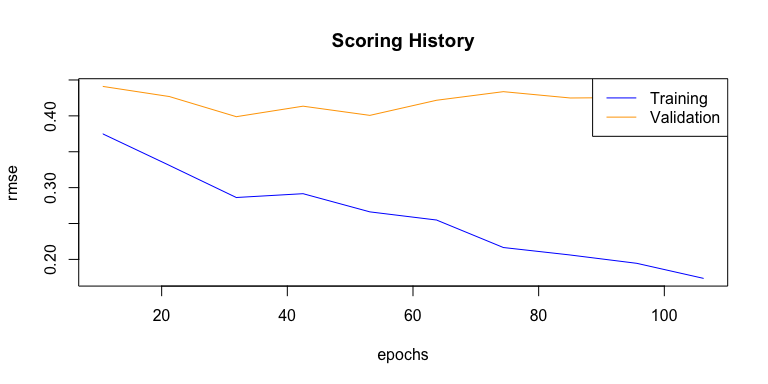
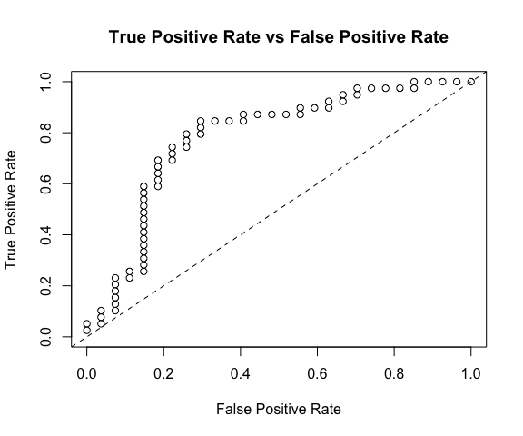

Last week, I introduced how to run machine learning applications on Spark from within R, using the sparklyr package. This week, I am showing how to build feed-forward deep neural networks or multilayer perceptrons. The models in this example are built to classify ECG data into being either from healthy hearts or from someone suffering from arrhythmia. I will show how to prepare a dataset for modeling, setting weights and other modeling parameters and finally, how to evaluate model performance with the h2o package via rsparkling.
Deep learning with neural networks
Deep learning with neural networks is arguably one of the most rapidly growing applications of machine learning and AI today. They allow building complex models that consist of multiple hidden layers within artifiical networks and are able to find non-linear patterns in unstructured data. Deep neural networks are usually feed-forward, which means that each layer feeds its output to subsequent layers, but recurrent or feed-back neural networks can also be built. Feed-forward neural networks are also called multilayer perceptrons (MLPs).
H2O and Sparkling Water
The R package h2o provides a convenient interface to H2O, which is an open-source machine learning and deep learning platform. H2O can be integrated with Apache Spark (Sparkling Water) and therefore allows the implementation of complex or big models in a fast and scalable manner. H2O distributes a wide range of common machine learning algorithms for classification, regression and deep learning.
Sparkling Water can be accessed from R with the rsparkling extension package to sparklyr and h2o. Check the documentation for rsparkling to find out which H2O, Sparkling Water and Spark versions are compatible.
Preparing the R session
First, we need to load the packages and connect to the Spark instance (for demonstration purposes, I am using a local instance).
library(rsparkling)
options(rsparkling.sparklingwater.version = "2.0.3")
library(h2o)
library(dplyr)
library(sparklyr)
sc <- spark_connect(master = "local", version = "2.0.0")
I am also preparing my custom plotting theme.
library(ggplot2)
library(ggrepel)
my_theme <- function(base_size = 12, base_family = "sans"){
theme_minimal(base_size = base_size, base_family = base_family) +
theme(
axis.text = element_text(size = 12),
axis.title = element_text(size = 14),
panel.grid.major = element_line(color = "grey"),
panel.grid.minor = element_blank(),
panel.background = element_rect(fill = "aliceblue"),
strip.background = element_rect(fill = "darkgrey", color = "grey", size = 1),
strip.text = element_text(face = "bold", size = 12, color = "white"),
legend.position = "right",
legend.justification = "top",
panel.border = element_rect(color = "grey", fill = NA, size = 0.5)
)
}
Arrhythmia data
The data I am using to demonstrate the building of neural nets is the arrhythmia dataset from UC Irvine’s machine learning database. It contains 279 features from ECG heart rhythm diagnostics and one output column. I am not going to rename the feature columns because they are too many and the descriptions are too complex. Also, we don’t need to know specifically which features we are looking at for building the models. For a description of each feature, see https://archive.ics.uci.edu/ml/machine-learning-databases/arrhythmia/arrhythmia.names. The output column defines 16 classes: class 1 samples are from healthy ECGs, the remaining classes belong to different types of arrhythmia, with class 16 being all remaining arrhythmia cases that didn’t fit into distinct classes.
arrhythmia <- read.table("arrhythmia.data.txt", sep = ",")
arrhythmia[arrhythmia == "?"] <- NA
# making sure, that all feature columns are numeric
arrhythmia[-280] <- lapply(arrhythmia[-280], as.character)
arrhythmia[-280] <- lapply(arrhythmia[-280], as.numeric)
# renaming output column and converting to factor
colnames(arrhythmia)[280] <- "class"
arrhythmia$class <- as.factor(arrhythmia$class)
As usual, I want to get acquainted with the data and explore it’s properties before I am building any model. So, I am first going to look at the distribution of classes and of healthy and arrhythmia samples.
p1 <- ggplot(arrhythmia, aes(x = class)) +
geom_bar(fill = "navy", alpha = 0.7) +
my_theme()
Because I am interested in distinguishing healthy from arrhythmia ECGs, I am converting the output to binary format by combining all arrhythmia cases into one class.
arrhythmia$diagnosis <- ifelse(arrhythmia$class == 1, "healthy", "arrhythmia")
arrhythmia$diagnosis <- as.factor(arrhythmia$diagnosis)
p2 <- ggplot(arrhythmia, aes(x = diagnosis)) +
geom_bar(fill = "navy", alpha = 0.7) +
my_theme()
library(gridExtra)
library(grid)
grid.arrange(p1, p2, ncol = 2)

With binary classification, we have almost the same numbers of healthy and arrhythmia cases in our dataset.
I am also interested in how much the normal and arrhythmia cases cluster in a Principal Component Analysis (PCA). I am first preparing the PCA plotting function and then run it on the feature data.
library(pcaGoPromoter)
pca_func <- function(pcaOutput2, group_name){
centroids <- aggregate(cbind(PC1, PC2) ~ groups, pcaOutput2, mean)
conf.rgn <- do.call(rbind, lapply(unique(pcaOutput2$groups), function(t)
data.frame(groups = as.character(t),
ellipse(cov(pcaOutput2[pcaOutput2$groups == t, 1:2]),
centre = as.matrix(centroids[centroids$groups == t, 2:3]),
level = 0.95),
stringsAsFactors = FALSE)))
plot <- ggplot(data = pcaOutput2, aes(x = PC1, y = PC2, group = groups, color = groups)) +
geom_polygon(data = conf.rgn, aes(fill = groups), alpha = 0.2) +
geom_point(size = 2, alpha = 0.5) +
labs(color = paste(group_name),
fill = paste(group_name),
x = paste0("PC1: ", round(pcaOutput$pov[1], digits = 2) * 100, "% variance"),
y = paste0("PC2: ", round(pcaOutput$pov[2], digits = 2) * 100, "% variance")) +
my_theme()
return(plot)
}
pcaOutput <- pca(t(arrhythmia[-c(280, 281)]), printDropped = FALSE, scale = TRUE, center = TRUE)
pcaOutput2 <- as.data.frame(pcaOutput$scores)
pcaOutput2$groups <- arrhythmia$class
p1 <- pca_func(pcaOutput2, group_name = "class")
pcaOutput2$groups <- arrhythmia$diagnosis
p2 <- pca_func(pcaOutput2, group_name = "diagnosis")
grid.arrange(p1, p2, ncol = 2)

The PCA shows that there is a big overlap between healthy and arrhythmia samples, i.e. there does not seem to be major global differences in all features. The class that is most distinct from all others seems to be class 9. I want to give the arrhythmia cases that are very different from the rest a stronger weight in the neural network, so I define a weight column where every sample outside the central PCA cluster will get a “2”, they will in effect be used twice in the model.
weights <- ifelse(pcaOutput2$PC1 < -5 & abs(pcaOutput2$PC2) > 10, 2, 1)
I also want to know what the variance is within features.
library(matrixStats)
colvars <- data.frame(feature = colnames(arrhythmia[-c(280, 281)]),
variance = colVars(as.matrix(arrhythmia[-c(280, 281)])))
subset(colvars, variance > 50) %>%
mutate(feature = factor(feature, levels = colnames(arrhythmia[-c(280, 281)]))) %>%
ggplot(aes(x = feature, y = variance)) +
geom_bar(stat = "identity", fill = "navy", alpha = 0.7) +
my_theme() +
theme(axis.text.x = element_text(angle = 90, vjust = 0.5, hjust = 1))

Features with low variance are less likely to strongly contribute to a differentiation between healthy and arrhythmia cases, so I am going to remove them. I am also concatenating the weights column:
arrhythmia_subset <- cbind(weights, arrhythmia[, c(281, 280, which(colvars$variance > 50))])
Working with rsparkling and h2o
Now that I have my final data frame for modeling, I copy it to the Spark instance. For working with h2o functions, the data needs to be converted from a Spark DataFrame to an H2O Frame. This is done with the as_h2o_frame() function.
arrhythmia_sc <- copy_to(sc, arrhythmia_subset)
arrhythmia_hf <- as_h2o_frame(sc, arrhythmia_sc, strict_version_check = FALSE)
We can now access all functions from the h2o package that are built to work on H2O Frames. A useful such function is h2o.describe(). It is similar to base R’s summary() function but outputs many more descriptive measures for our data. To get a good overview about these measures, I am going to plot them.
library(tidyr) # for gathering
h2o.describe(arrhythmia_hf[, -1]) %>% # excluding the weights column
gather(x, y, Zeros:Sigma) %>%
mutate(group = ifelse(x %in% c("Min", "Max", "Mean"), "min, mean, max",
ifelse(x %in% c("NegInf", "PosInf"), "Inf", "sigma, zeros"))) %>% # separating them into facets makes them easier to see
mutate(Label = factor(Label, levels = colnames(arrhythmia_hf[, -1]))) %>%
ggplot(aes(x = Label, y = as.numeric(y), color = x)) +
geom_point(size = 4, alpha = 0.6) +
scale_color_brewer(palette = "Set1") +
my_theme() +
theme(axis.text.x = element_text(angle = 90, vjust = 0.5, hjust = 1)) +
facet_grid(group ~ ., scales = "free") +
labs(x = "Feature",
y = "Value",
color = "")

I am also interested in the correlation between features and the output. We can use the h2o.cor() function to calculate the correlation matrix. It is again much easier to understand the data when we visualize it, so I am going to create another plot.
library(reshape2) # for melting
arrhythmia_hf[, 2] <- h2o.asfactor(arrhythmia_hf[, 2]) # diagnosis is now a characer column and we need to convert it again
arrhythmia_hf[, 3] <- h2o.asfactor(arrhythmia_hf[, 3]) # same for class
cor <- h2o.cor(arrhythmia_hf[, -c(1, 3)])
rownames(cor) <- colnames(cor)
melt(cor) %>%
mutate(Var2 = rep(rownames(cor), nrow(cor))) %>%
mutate(Var2 = factor(Var2, levels = colnames(cor))) %>%
mutate(variable = factor(variable, levels = colnames(cor))) %>%
ggplot(aes(x = variable, y = Var2, fill = value)) +
geom_tile(width = 0.9, height = 0.9) +
scale_fill_gradient2(low = "white", high = "red", name = "Cor.") +
my_theme() +
theme(axis.text.x = element_text(angle = 90, vjust = 0.5, hjust = 1)) +
labs(x = "",
y = "")

Training, test and validation data
Now we can use the h2o.splitFrame() function to split the data into training, validation and test data. Here, I am using 70% for training and 15% each for validation and testing. We could also just split the data into two sections, a training and test set but when we have sufficient samples, it is a good idea to evaluate model performance on an independent test set on top of training with a validation set. Because we can easily overfit a model, we want to get an idea about how generalizable it is - this we can only assess by looking at how well it works on previously unknown data.
I am also defining response, feature and weight column names now.
splits <- h2o.splitFrame(arrhythmia_hf,
ratios = c(0.7, 0.15),
seed = 1)
train <- splits[[1]]
valid <- splits[[2]]
test <- splits[[3]]
response <- "diagnosis"
weights <- "weights"
features <- setdiff(colnames(train), c(response, weights, "class"))
summary(train$diagnosis, exact_quantiles = TRUE)
## diagnosis
## healthy :163
## arrhythmia:155
summary(valid$diagnosis, exact_quantiles = TRUE)
## diagnosis
## healthy :43
## arrhythmia:25
summary(test$diagnosis, exact_quantiles = TRUE)
## diagnosis
## healthy :39
## arrhythmia:27
If we had more categorical features, we could use the h2o.interaction() function to define interaction terms, but since we only have numeric features here, we don’t need this.
We can also run a PCA on the training data, using the h2o.prcomp() function to calculate the singular value decomposition of the Gram matrix with the power method.
pca <- h2o.prcomp(training_frame = train,
x = features,
validation_frame = valid,
transform = "NORMALIZE",
k = 3,
seed = 42)
pca
## Model Details:
## ==============
##
## H2ODimReductionModel: pca
## Model ID: PCA_model_R_1488113493291_1
## Importance of components:
## pc1 pc2 pc3
## Standard deviation 0.598791 0.516364 0.424850
## Proportion of Variance 0.162284 0.120680 0.081695
## Cumulative Proportion 0.162284 0.282965 0.364660
##
##
## H2ODimReductionMetrics: pca
##
## No model metrics available for PCA
## H2ODimReductionMetrics: pca
##
## No model metrics available for PCA
eigenvec <- as.data.frame(pca@model$eigenvectors)
eigenvec$label <- features
ggplot(eigenvec, aes(x = pc1, y = pc2, label = label)) +
geom_point(color = "navy", alpha = 0.7) +
geom_text_repel() +
my_theme()

Modeling
Now, we can build a deep neural network model. We can specify quite a few parameters, like
-
Cross-validation: Cross validation can tell us the training and validation errors for each model. The final model will be overwritten with the best model, if we don’t specify otherwise.
-
Adaptive learning rate: For deep learning with h2o, we by default use stochastic gradient descent optimization with an an adaptive learning rate. The two corresponding parameters rho and epsilon help us find global (or near enough) optima.
-
Activation function: The activation function defines the node output relative to a given set of inputs. We want our activation function to be non-linear and continuously differentiable.
-
Hidden nodes: Defines the number of hidden layers and the number of nodes per layer.
-
Epochs: Increasing the number of epochs (one full training cycle on all training samples) can increase model performance, but we also run the risk of overfitting. To determine the optimal number of epochs, we need to use early stopping.
-
Early stopping: By default, early stopping is enabled. This means that training will be stopped when we reach a certain validation error to prevent overfitting.
Of course, you need quite a bit of experience and intuition to hit on a good combination of parameters. That’s why it usually makes sense to do a grid search for hyper-parameter tuning. Here, I want to focus on building and evaluating deep learning models, though. I will cover grid search in next week’s post.
dl_model <- h2o.deeplearning(x = features,
y = response,
weights_column = weights,
model_id = "dl_model",
training_frame = train,
validation_frame = valid,
nfolds = 15, # 10x cross validation
keep_cross_validation_fold_assignment = TRUE,
fold_assignment = "Stratified",
activation = "RectifierWithDropout",
score_each_iteration = TRUE,
hidden = c(200, 200, 200, 200, 200), # 5 hidden layers, each of 200 neurons
epochs = 100,
variable_importances = TRUE,
export_weights_and_biases = TRUE,
seed = 42)
Because training can take a while, depending on how many samples, features, nodes and hidden layers you are training on, it is a good idea to save your model.
h2o.saveModel(dl_model, path = "dl_model")
We can then re-load the model again any time to check the model quality and make predictions on new data.
dl_model <- h2o.loadModel("dl_model/dl_model")
Model performance
We now want to know how our model performed on the validation data. The summary() function will give us a detailed overview of our model. I am not showing the output here, because it is quite extensive.
summary(dl_model)
One performance metric we are usually interested in is the mean per class error for training and validation data.
h2o.mean_per_class_error(dl_model, train = TRUE, valid = TRUE, xval = TRUE)
## train valid xval
## 0.0304878 0.2232558 0.2257781
The confusion matrix tells us, how many classes have been predicted correctly and how many predictions were accurate. Here, we see the errors in predictions on validation data
h2o.confusionMatrix(dl_model, valid = TRUE)
## Confusion Matrix (vertical: actual; across: predicted) for max f1 @ threshold = 0.00425904880659062:
## arrhythmia healthy Error Rate
## arrhythmia 15 10 0.400000 =10/25
## healthy 2 41 0.046512 =2/43
## Totals 17 51 0.176471 =12/68
We can also plot the classification error over all epochs or samples.
plot(dl_model,
timestep = "epochs",
metric = "classification_error")

plot(dl_model,
timestep = "samples",
metric = "classification_error")

Next to the classification error, we are usually interested in the logistic loss (negative log-likelihood or log loss). It describes the sum of errors for each sample in the training or validation data or the negative logarithm of the likelihood of error for a given prediction/ classification. Simply put, the lower the loss, the better the model (if we ignore potential overfitting).
plot(dl_model,
timestep = "epochs",
metric = "logloss")

We can also plot the mean squared error (MSE). The MSE tells us the average of the prediction errors squared, i.e. the estimator’s variance and bias. The closer to zero, the better a model.
plot(dl_model,
timestep = "epochs",
metric = "rmse")

Next, we want to know the area under the curve (AUC). AUC is an important metric for measuring binary classification model performances. It gives the area under the curve, i.e. the integral, of true positive vs false positive rates. The closer to 1, the better a model.
h2o.auc(dl_model, train = TRUE)
## [1] 0.9864582
h2o.auc(dl_model, valid = TRUE)
## [1] 0.852093
h2o.auc(dl_model, xval = TRUE)
## [1] 0.8577735
The weights for connecting two adjacent layers and per-neuron biases that we specified the model to save, can be accessed with:
w <- h2o.weights(dl_model, matrix_id = 1)
b <- h2o.biases(dl_model, vector_id = 1)
Variable importance can be extracted as well (but keep in mind, that variable importance in deep neural networks is difficult to assess and should be considered only as rough estimates).
h2o.varimp(dl_model)
## Variable Importances:
## variable relative_importance scaled_importance percentage
## 1 V169 1.000000 1.000000 0.013925
## 2 V239 0.987290 0.987290 0.013748
## 3 V103 0.913953 0.913953 0.012727
## 4 V15 0.907422 0.907422 0.012636
## 5 V91 0.904267 0.904267 0.012592
##
## ---
## variable relative_importance scaled_importance percentage
## 85 V88 0.717914 0.717914 0.009997
## 86 V269 0.715800 0.715800 0.009968
## 87 V137 0.712923 0.712923 0.009928
## 88 V168 0.711402 0.711402 0.009906
## 89 V33 0.707356 0.707356 0.009850
## 90 V219 0.696149 0.696149 0.009694
#h2o.varimp_plot(dl_model)
Test data
Now that we have a good idea about model performance on validation data, we want to know how it performed on unseen test data. A good model should find an optimal balance between accuracy on training and test data. A model that has 0% error on the training data but 40% error on the test data is in effect useless. It overfit on the training data and is thus not able to generalize to unknown data.
perf <- h2o.performance(dl_model, test)
perf
## H2OBinomialMetrics: deeplearning
##
## MSE: 0.2154912
## RMSE: 0.4642103
## LogLoss: 1.378809
## Mean Per-Class Error: 0.2250712
## AUC: 0.7796771
## Gini: 0.5593542
##
## Confusion Matrix (vertical: actual; across: predicted) for F1-optimal threshold:
## arrhythmia healthy Error Rate
## arrhythmia 19 8 0.296296 =8/27
## healthy 6 33 0.153846 =6/39
## Totals 25 41 0.212121 =14/66
##
## Maximum Metrics: Maximum metrics at their respective thresholds
## metric threshold value idx
## 1 max f1 0.132564 0.825000 40
## 2 max f2 0.000002 0.894495 61
## 3 max f0point5 0.132564 0.812808 40
## 4 max accuracy 0.132564 0.787879 40
## 5 max precision 0.982938 1.000000 0
## 6 max recall 0.000002 1.000000 61
## 7 max specificity 0.982938 1.000000 0
## 8 max absolute_mcc 0.132564 0.557317 40
## 9 max min_per_class_accuracy 0.837616 0.743590 34
## 10 max mean_per_class_accuracy 0.132564 0.774929 40
##
## Gains/Lift Table: Extract with `h2o.gainsLift(<model>, <data>)` or `h2o.gainsLift(<model>, valid=<T/F>, xval=<T/F>)`
Plotting the test performance’s AUC plot shows us approximately how good the predictions are.
plot(perf)

We also want to know the log loss, MSE and AUC values, as well as other model metrics for the test data:
h2o.logloss(perf)
## [1] 1.378809
h2o.mse(perf)
## [1] 0.2154912
h2o.auc(perf)
## [1] 0.7796771
head(h2o.metric(perf))
## Metrics for Thresholds: Binomial metrics as a function of classification thresholds
## threshold f1 f2 f0point5 accuracy precision recall
## 1 0.982938 0.050000 0.031847 0.116279 0.424242 1.000000 0.025641
## 2 0.982811 0.097561 0.063291 0.212766 0.439394 1.000000 0.051282
## 3 0.982460 0.095238 0.062893 0.196078 0.424242 0.666667 0.051282
## 4 0.982256 0.139535 0.093750 0.272727 0.439394 0.750000 0.076923
## 5 0.982215 0.181818 0.124224 0.338983 0.454545 0.800000 0.102564
## 6 0.981170 0.177778 0.123457 0.317460 0.439394 0.666667 0.102564
## specificity absolute_mcc min_per_class_accuracy mean_per_class_accuracy
## 1 1.000000 0.103203 0.025641 0.512821
## 2 1.000000 0.147087 0.051282 0.525641
## 3 0.962963 0.033624 0.051282 0.507123
## 4 0.962963 0.082188 0.076923 0.519943
## 5 0.962963 0.121754 0.102564 0.532764
## 6 0.925926 0.048725 0.102564 0.514245
## tns fns fps tps tnr fnr fpr tpr idx
## 1 27 38 0 1 1.000000 0.974359 0.000000 0.025641 0
## 2 27 37 0 2 1.000000 0.948718 0.000000 0.051282 1
## 3 26 37 1 2 0.962963 0.948718 0.037037 0.051282 2
## 4 26 36 1 3 0.962963 0.923077 0.037037 0.076923 3
## 5 26 35 1 4 0.962963 0.897436 0.037037 0.102564 4
## 6 25 35 2 4 0.925926 0.897436 0.074074 0.102564 5
The confusion matrix alone can be seen with the h2o.confusionMatrix() function, but is is also part of the performance summary.
h2o.confusionMatrix(dl_model, test)
The final predictions with probabilities can be extracted with the h2o.predict() function. Beware though, that the number of correct and wrong classifications can be slightly different from the confusion matrix above. Here, I combine the predictions with the actual test diagnoses and classes into a data frame. For plotting I also want to have a column, that tells me whether the predictions were correct. By default, a prediction probability above 0.5 will get scored as a prediction for the respective category. I find it often makes sense to be more stringent with this, though and set a higher threshold. Therefore, I am creating another column with stringent predictions, where I only count predictions that were made with more than 80% probability. Everything that does not fall within this range gets scored as “uncertain”. For these stringent predictions, I am also creating a column that tells me whether they were accurate.
finalRf_predictions <- data.frame(class = as.vector(test$class), actual = as.vector(test$diagnosis), as.data.frame(h2o.predict(object = dl_model, newdata = test)))
finalRf_predictions$accurate <- ifelse(finalRf_predictions$actual == finalRf_predictions$predict, "yes", "no")
finalRf_predictions$predict_stringent <- ifelse(finalRf_predictions$arrhythmia > 0.8, "arrhythmia",
ifelse(finalRf_predictions$healthy > 0.8, "healthy", "uncertain"))
finalRf_predictions$accurate_stringent <- ifelse(finalRf_predictions$actual == finalRf_predictions$predict_stringent, "yes",
ifelse(finalRf_predictions$predict_stringent == "uncertain", "na", "no"))
finalRf_predictions %>%
group_by(actual, predict) %>%
summarise(n = n())
## Source: local data frame [4 x 3]
## Groups: actual [?]
##
## actual predict n
## <fctr> <fctr> <int>
## 1 arrhythmia arrhythmia 16
## 2 arrhythmia healthy 11
## 3 healthy arrhythmia 6
## 4 healthy healthy 33
finalRf_predictions %>%
group_by(actual, predict_stringent) %>%
summarise(n = n())
## Source: local data frame [6 x 3]
## Groups: actual [?]
##
## actual predict_stringent n
## <fctr> <chr> <int>
## 1 arrhythmia arrhythmia 19
## 2 arrhythmia healthy 6
## 3 arrhythmia uncertain 2
## 4 healthy arrhythmia 8
## 5 healthy healthy 29
## 6 healthy uncertain 2
To get a better overview, I am going to plot the predictions (default and stringent):
p1 <- finalRf_predictions %>%
ggplot(aes(x = actual, fill = accurate)) +
geom_bar(position = "dodge") +
scale_fill_brewer(palette = "Set1") +
my_theme() +
labs(fill = "Were\npredictions\naccurate?",
title = "Default predictions")
p2 <- finalRf_predictions %>%
subset(accurate_stringent != "na") %>%
ggplot(aes(x = actual, fill = accurate_stringent)) +
geom_bar(position = "dodge") +
scale_fill_brewer(palette = "Set1") +
my_theme() +
labs(fill = "Were\npredictions\naccurate?",
title = "Stringent predictions")
grid.arrange(p1, p2, ncol = 2)

Being more stringent with the prediction threshold slightly reduced the number of errors but not by much.
I also want to know whether there are certain classes of arrhythmia that are especially prone to being misclassified:
p1 <- subset(finalRf_predictions, actual == "arrhythmia") %>%
ggplot(aes(x = predict, fill = class)) +
geom_bar(position = "dodge") +
my_theme() +
labs(title = "Prediction accuracy of arrhythmia cases",
subtitle = "Default predictions",
x = "predicted to be")
p2 <- subset(finalRf_predictions, actual == "arrhythmia") %>%
ggplot(aes(x = predict_stringent, fill = class)) +
geom_bar(position = "dodge") +
my_theme() +
labs(title = "Prediction accuracy of arrhythmia cases",
subtitle = "Stringent predictions",
x = "predicted to be")
grid.arrange(p1, p2, ncol = 2)

There are no obvious biases towards some classes but with the small number of samples for most classes, this is difficult to assess.
Final conclusions: How useful is the model?
Most samples were classified correctly, but the total error was not particularly good. Moreover, when evaluating the usefulness of a specific model, we need to keep in mind what we want to achieve with it and which questions we want to answer. If we wanted to deploy this model in a clinical setting, it should assist with diagnosing patients. So, we need to think about what the consequences of wrong classifications would be. Would it be better to optimize for high sensitivity, in this example as many arrhythmia cases as possible get detected - with the drawback that we probably also diagnose a few healthy people? Or do we want to maximize precision, meaning that we could be confident that a patient who got predicted to have arrhythmia does indeed have it, while accepting that a few arrhythmia cases would remain undiagnosed? When we consider stringent predictions, this model correctly classified 19 out of 27 arrhythmia cases, but 6 were misdiagnosed. This would mean that some patients who were actually sick, wouldn’t have gotten the correct treatment (if decided solely based on this model). For real-life application, this is obviously not sufficient!
Next week, I’ll be trying to improve the model by doing a grid search for hyper-parameter tuning.
So, stay tuned… (sorry, couldn’t resist ;-))
If you are interested in more machine learning posts, check out the category listing for machine_learning.
## R version 3.3.2 (2016-10-31)
## Platform: x86_64-apple-darwin13.4.0 (64-bit)
## Running under: macOS Sierra 10.12.3
##
## locale:
## [1] en_US.UTF-8/en_US.UTF-8/en_US.UTF-8/C/en_US.UTF-8/en_US.UTF-8
##
## attached base packages:
## [1] stats4 parallel grid stats graphics grDevices utils
## [8] datasets methods base
##
## other attached packages:
## [1] reshape2_1.4.2 tidyr_0.6.1 matrixStats_0.51.0
## [4] pcaGoPromoter_1.18.0 Biostrings_2.42.1 XVector_0.14.0
## [7] IRanges_2.8.1 S4Vectors_0.12.1 BiocGenerics_0.20.0
## [10] ellipse_0.3-8 gridExtra_2.2.1 ggrepel_0.6.5
## [13] ggplot2_2.2.1 sparklyr_0.5.2 dplyr_0.5.0
## [16] h2o_3.10.3.6 rsparkling_0.1.0
##
## loaded via a namespace (and not attached):
## [1] Rcpp_0.12.9 RColorBrewer_1.1-2 plyr_1.8.4
## [4] zlibbioc_1.20.0 bitops_1.0-6 base64enc_0.1-3
## [7] tools_3.3.2 digest_0.6.12 memoise_1.0.0
## [10] RSQLite_1.1-2 jsonlite_1.2 evaluate_0.10
## [13] tibble_1.2 gtable_0.2.0 DBI_0.5-1
## [16] yaml_2.1.14 withr_1.0.2 httr_1.2.1
## [19] stringr_1.2.0 knitr_1.15.1 rappdirs_0.3.1
## [22] rprojroot_1.2 Biobase_2.34.0 R6_2.2.0
## [25] AnnotationDbi_1.36.0 rmarkdown_1.3 magrittr_1.5
## [28] backports_1.0.5 scales_0.4.1 htmltools_0.3.5
## [31] assertthat_0.1 colorspace_1.3-2 labeling_0.3
## [34] config_0.2 stringi_1.1.2 RCurl_1.95-4.8
## [37] lazyeval_0.2.0 munsell_0.4.3